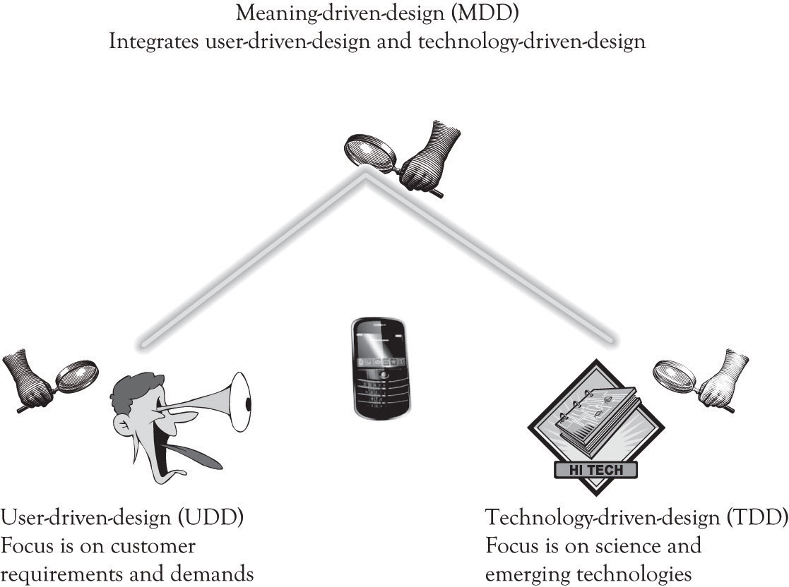

The previous chapters have focused on learning the basic concepts related to product differentiation in the context of monopolistic competition. The focus of this chapter is learning-by-doing. We will use techniques to help transform a nagging idea about a new product to be more explicit and real. The tool for completing this task is called the FAD (features, attributes, and design) template. The FAD template is used to identify the features and attributes that can be used for product and service differentiation. The first part of the chapter will introduce the key concepts necessary to understand and motivate the use of the FAD template. The FAD template will then be introduced and used to demonstrate and structure the development of important attributes and features of a new product or service.
Here are some definitions and concepts that can be used to understand how products and services can be differentiated:
Figure 7.1 SuperDuper Smartphone

A very simple way to view all the above is that features, function, form, design, and meaning are all attributes, with different levels of information about a product. Consider the SuperDuper smartphone in Figure 7.1 "SuperDuper Smartphone". The SuperDuper phone has a keypad (attribute, feature, function, and form), with lighted square keys (attribute, feature, and form), and a high color indestructible screen (attribute, feature, and form) with a black onyx color and coarse texture (attributes, features, and form), which can be used for calling and texting (attributes, features and functions), listening to stereo music (attribute, feature, and function), and locating friends within 1 mile (attribute, feature and function). This smart and futuristic SuperDuper phone (attribute and overall design) creates feelings of connectedness, comfort, and security (attributes and meanings).
There are three fundamental approaches to design (Figure 7.2 "Fundamental Design Approaches"). The user-driven design (UDD)Design approach focused on researching consumer wants and needs. school is focused on researching consumer wants and needs. The technology-driven design (TDD)Design approach focused applying new and emerging technologies to develop products and services. school is not a school per se, but rather an approach that is focused on applying new and emerging technologies to develop products and services. The meaning-driven design (MDD)Design approach focused on the emotional and psychological relationships that people have with things, objects, and products and attempts to design products that satisfy these meanings. school focuses on the emotional and psychological relationships that people have with things, objects, and products and attempts to design products that satisfy these meanings. Most products can be designed using all three approaches, for example, software, custom houses, furnishings, electronics, clothes, personal care, appliances, and transportation. Some products such as CPUs’ semiconductors and nanotechnology and health equipment are primarily technology driven.
Figure 7.2 Fundamental Design Approaches
MDD also involves UDD, but it is not the motivation behind the entire process. In MDD, the company executives and research and development (R&D) personnel design the next-generation product and then present it to consumers. They still obtain a reaction from potential consumers, but it is not the sole driving force behind the process. The MDD approach also incorporates technology-push innovation, where innovative emerging technologies are pushed to the market. In essence, MDD uses elements of both UDD and TDD to deliver innovative products. The unique part of MDD is the search for meaning. There is a search for meaning in the way that people relate to objects. This is often accomplished by collaborating with other organizations and with experts in the product domain on how the product should be designed. The design of the product is not solely derived from customer pull as is the case of UDD, but is also driven by the innovator and new and emerging technologies. In MDD, the innovator synthesizes information from a variety of sources and then uses this knowledge to design innovative products.Software developers often use a technique referred to as user-centered design or participative design that has elements of UDD and MDD. In user-centered design, there is an iterative process of building the application and having the user continuously validate software solution.
The idea behind the MDD School of innovation is to look for meaning in everyday products and to try to determine how they can be changed in a radical way to support the emotional and psychological needs of consumers. The MDD approach to developing a Blue Ocean market involves understanding how customers relate to products and then developing new products that get at the core of what meaning customers attach to products.As noted in an earlier chapter. A Blue Ocean market is a market that is not in existence. A Blue Ocean product is a new product that is radically differentiated from existing products that are being offered.
Many individuals in the MDD school believe that the user-centered design is a hindrance to developing radical innovations.Cf. Verganti (2009). The focus of the MDDapproach is to find the meaning in the way people relate to objects in their everyday life. The MDD school of innovation not only contemplates beauty and form, but also examines the emotional and psychological relationships that people have with things, objects, and products. Proponents of MDD believe that developing innovative ideas that transcend existing product concepts requires more than just attending to product differentiation. Since the MDD school of innovation uses a push strategy. Product ideas are conceived as a vision and offered to consumers as a proposal. As noted by Verganti: “These proposals are not dreams without a foundation. These proposals eventually emerge as the products users were actually looking for. They end-up being what people were waiting for—and thus are great marketing successes” (p. 116).
We alluded to the fundamental meaning of product in the earlier discussion of the basic functions of products. There are many different types of meanings that can be attached to products, some of them are tangible and some of them are complex and elusive. Key areas of meaning include the following: provide physical and emotional sustenance; facilitate control over the environment; provide entertainment; provide feelings of status, superiority, and elitism; provide a sense of stewardship; provide a sense of altruism; provide feelings of adventure; provide security and comfort; facilitate the completion of some work or home task; provide familial support; support learning and adaptation; help us to change location; provide opportunity for communication and networking; provide for respect and recognition; and, of course, be a source of satisfaction and happiness.
Traditional user-centered design approaches are not focused on understanding the meaning of the relationship that people have with objects. The Wii is not a game machine, it is the campfire surrounded by family and friends. Embedding diamonds in wireless phones contributes little to the calling function. But in some people’s minds, diamonds are a symbol of affluence and sophistication and are used to convey that image. The iPhone is not just a phone and the iTouch is not just an MP3 player, they are status symbols that also provide comfort and social networking. A Cirque du Soleil performance is not just a circus or just entertainment, it is a risky adventure in an ethereal world never seen before. The iPad is not a replacement for a netbook or a laptop, it is the adventurer’s guide to the galaxy of knowledge and entertainment. It is the present day Hitch Hikers Guide to the Galaxy.
Attaching meaning to objects is of course somewhat subjective and strongly influenced by the researcher’s background and by social mores. There are numerous types of meaning that can be examined and they are often interdependent.
Designing products that draw on meaning requires creativity and hard work. Creativity can be cultivated and is within the grasp of most people as discussed in Chapter 6 "Facilitating Creativity and Innovation". The hard work is the never-ending process of determining the proper ingredients that go into the secret sauce to keep people from becoming bored or even worse, ignoring your product.
A key part of the MDD process involves partnering with interpreters. This partnering involves both learning-about and learning-by-doing. The interpreters are the organizations and individuals who are working on products that are similar to the products that you are examining. They can be suppliers and component manufactures, consultants, consumers, competitors, universities, research firms and think tanks, trade association and publications, research conferences, and of course one of the most important interpreters, the search engine.
There are other approaches to design that focus on marketing, project management, product management, portfolio management, product engineering, creativity, and controlling the process. Later chapters will discuss the role of project management, new product development and portfolio management in providing structure to the innovation process.
Many companies use hybrid approaches that draw on UDD, TDD, and MDD. Our focus in this chapter is primarily on MDD. But we also rely on user-centered design for refining products and making them usable. Even Apple, who we believe is the wunderkind of MDD in the USA, listens to their customers. For example, they redesigned Apple TV to become an inexpensive video-streaming device and put buttons on the smallest shuffle because consumers did not like having all the music control buttons on the ear bud cord.Lyons (2010b, September 1). UDD is also very important for software development, whether it be in the context of game development, applications development, or social networking applications. A customer-centric agile development process is essential for delivering products that will be used. Ergonomics, ergonomics laboratories, and usability research are the foundation for delivering high-quality software products to the consumers.
There is one more design strategy that can be linked to many product failures. It is a purely functional design strategy that does not incorporate user needs or meaning at all. There is little if any UDD or MDD. This situation occurs where someone thinks that there is a need or demand for a product or service, but the end-users were not listened to or were ignored completely. This often occurs when there is no need or demand for a product or service, but someone thought that it would be a good idea to develop it anyway. I was involved with such a product when I worked as a programmer. Here is the story.
Barlow was the head of our IT group and he was also the head scorekeeper for the plant’s golf league. Every Monday morning Barlow would take the golf scores from the past week of play and compute the league standings as well as calculate the handicaps. Barlow had been doing this for years. Someone in human resources thought that he was spending too much time on the league and they also thought it was a burden to Barlow. So HR commissioned a golf handicapping and league scoring system. A complete cost–benefit analysis was actually implemented and the payback was deemed acceptable, so the green light was given to the project. A team of analysts and programmers were assigned to gather requirements and implement the system. Tens of thousands of dollars were spent developing and programming the system. The system was used just a couple of times. It was a pain to use, the results were incorrect, and most importantly, Barlow could finish his calculations faster than it would take to key-in the data and generate the reports. Barlow actually liked his manual system and took pride in his ability to produce weekly updates in a few hours. He said as such, in quiet tones, but he was not listened to.
In the current market context, functionally designed products and services are sometimes at risk, unless the meaning of the design is to convey simplicity and functionality. There are numerous examples of successful products and services that simply do what they are supposed to do, because they are functional. Functionally designed products can be even more successful when they are accompanied by user-centered design and meaning-centered design.
One thing is for sure. There are literally thousands of attributes, features, designs, and meanings that can be used to define products and services. This section details the major attributes that should be considered during product and service development.
Design attractiveness and innovation also applies to services. Packaging for a service includes the overall look and feel of the service. It is the gestalt or form and configuration of the service as perceived by the consumer. The key success indicator for a service is the customer’s perception of the overall experience with the service process.Bitner, Ostrom, and Morgan (2008).
After reading through the list, you can probably notice that there is a significant amount of overlap among the different attribute categories. This is in part related to the imprecision of words in all languages and to the proliferation of synonyms. A Venn diagram illustrating the relationships among words and their meanings would visually depict significant degrees of overlap. This ties in very well with the concept of a brand and MDD. Recall that a brand is simply something that lives in the head of consumers.Adamson (2006). A brand is simply a composite of the mental associations that are generated when you see or think about a certain product. Another way to think about branding is as a gestalt view of the product. It is more than the sum of its parts (the attributes, features, functions, form, design, and meaning). It is the meaning we attach to the product and all the neural associations that are invoked when the product or service is recalled.
A fundamental force of adaptation in human beings is our attempt to control the environment.Cf. Jo, Moon, Garrity, and Sanders (2007). Infants try to get control of their environment by crying. Cuteness is a built-in genetic adaptation that augments crying and also facilitates environmental control. As we age, this strategy does not work very well and people control the environment by fitting-in, which is another type of control. Security, freedom, independence, and emancipation are the rewards of obtaining control. Getting wheels and driving, acquiring a secure and comfortable home, obtaining a job, and achieving financial security are milestones in achieving control. One person’s gain in control can sometimes lead to a loss of control by another. This is the collateral damage that can occur when someone gains too much control over others. For example, colleagues, family, and friends can facilitate (or hinder) the drive for environmental control. However, that same individual can in turn use the control to dominate those who helped him or her to achieve environmental control. Many individual and group conflicts can be traced to someone seeking excessive control or to someone else seeking emancipation from the excessive control.
The two fundamental strategies used to control the environment are primary controlOccurs when an individual tries to directly engage with and change the external environment to fit his or her needs and wishes. and secondary controlA type of control directed at changing the self to cope with the environment.. Primary control occurs when an individual tries to directly engage with and change the external environment to fit his or her needs and wishes.Heckhausen and Schulz (1995); Skinner (1996). Secondary control is a type of control that is directed at changing the self in order to cope with the environment. Secondary control is a goal-directed coping strategy for minimizing losses in primary control and also a mechanism for maintaining and increasing primary control. Individuals that do not engage in primary or secondary control have relinquished control and this is manifested by passivity and helplessness. Individuals engaging in primary control try to fix the environment, and those engaged in secondary control try to adapt to the environment. Both strategies assist in coping with the stress and complexity that are part of the everyday activities in the external environment.
We have found that primary and secondary controls also influence feelings of psychological ownership an individual has towards his or her avatar in an online game.Jo et al. (2011). Psychological ownership occurs when people have feelings of ownership towards material things or tangible objects and even immaterial or intangible objects.Pierce, Kostovab, and Dirks (2003). It occurs when an individual views the object as mine. We have found that the key to obtaining lock-in in online gaming environments is to get game players to embrace the system as though they own it. This ownership is the direct result of being able to exercise both primary and secondary controls over their online character by way of the user interface and by successfully interacting with members of the online guilds.
Facebook is a very interesting case of using systems to gain environmental control. It is very difficult for people to actually brag about their day-to-day accomplishments and activities in the real world or nononline world. It is much easier, and is indeed acceptable, in Facebook interactions to talk about oneself. There are several mechanisms built into Facebook that encourage bragging. For example, if a picture is added to the photo library or is used to display the image on the Facebook profile, then it is acceptable to brag or tout one’s stuff on the accomplishment or the activity. Facebook permits people to control what is known and what is not known about them. It also opens up new lines of communication and it can sometimes alleviate loneliness and even increase recognition and status. LinkedIn is the social networking tool of choice for bragging about professional accomplishments and looking for a job, while Twitter is the outlet of choice for serial braggers and businesses that want to obtain exposure.
The bottom line is that if people can control a product or service or if a product or service helps to actually control the world, people will feel that they own the artifact and thus become locked-in to using that product or service out of loyalty.
There are of course issues of having too much control and having too many options. There is some evidence that having too many choices leads to decision paralysis and some people believe that having too many choices contributes to depression.Schwartz (2003). Novice users of any product or service need directed guidance. A wireless phone or a DVR needs to be easy to use for the first-time user, but also readily customizable as experience grows and new features are sought.
Some attributes of products were important 5 years ago, but they are not today. Some product features were not even available last year, but they are mandatory today. Similarly, product designs and their accompanying meanings are constantly in flux. The importance of product attributes changes. The following classification scheme can be used to ascertain whether attributes and features are increasing or declining in importance. The classification scheme was derived from a variety of sources.Iyer and Muncy (2005); Keller, Sternthal, and Tybout (2002); Keller and Tybout (2002); Kim and Mauborgne (2005); McGrath and MacMillan (2000); Tybout and Sternthal (2005).
These are attributes that most of the products in a category usually have. They are the basic features found in a product or service. They help to define the prototypical product. A productSomething that is tangible, does something, and has a function. is something that is tangible and it does something and has a function.Adamson (2006). For example, it provides sustenance; it provides security and comfort; it helps us to complete some task; it helps us to learn and adapt; and it helps us to change location, communicate, and network. The product should do what it is meant to do, with certain features that are compelling and functional. These features with their accompanying functionality are “must-haves” for a product or service to be minimally acceptable, and preferably strongly desired. If a product does not possess these essential features and functionality, it might be eliminated from consideration. For example, an auto global positioning system (GPS) should have the ability to enter an address and display how long it will take to get to a location; a word processor should have spell-checking capabilities; and a movie theater should sell treats.The attributes that most products in a category usually have.
These are the attributes of a product or service that assist in distinguishing products from the competition and from similar models in a product line. Product and service features that are differentiators are usually derived from Midas products and are high-end products. They are for nonprice-sensitive consumers. You can think of the demand curve as a steep incline where product features roll down from Midas products to Atlas products. When costs are further driven down, the features become the standard of Hermes products. Hermes products are for price-sensitive consumers. Important differentiators for auto GPSs include Bluetooth capability, voice recognition, and topography maps. A movie theater could have very comfortable seats. A word processor could have voice control. As noted earlier, the features tend to roll down the demand curve and the differentiators become must-haves over time.Attributes of a product or service that assist in distinguishing products from the competition and from similar models in a product line.
These features are typically in the very early stages of R&D and part of a secret plan to develop a new market. BOFs have the potential to deliver a knockout punch by developing a Blue Ocean market, a brand new uncontested marketplace. In general, BOF features are in their infancy—beginning to unfold and emerge. Examples for auto GPS might include location of friends and family in close proximity.Features typically in the very early stages of R&D and part of a secret plan to develop a new market.
Another way to identify exciters or BOFs is to think about ways you could go about putting your company out of business or for that matter any company out of business. These are nightmare features and technologies. Many of the ideas that have contributed to putting companies, industries, and even countries out of business were derived from radical technological innovation. Examples include the printing press; armaments and tactical innovations; and networking, computing, and communications innovations. These so-called disruptive technologies are product or process innovations that eventually eclipse or overturn the existing dominant technology. Disruptive technologies can lead to sunrise features and to sunrise products. Sunrise features and products are the dawn of new technological and conceptual capabilities.
These are attributes that are no longer necessary or on the verge of becoming extinct. They are sunset features. They are features that are on the verge of becoming obsolete and fading into darkness and oblivion. Sometimes EXTs cannot be removed because there may be a small subset of people that demand the feature. In this case, a decision has to be made to abandon the features or keep the feature. Sometimes the decision to abandon is the best way to go because of cost issues and because the company is going down a new technology path. This was the case with recent versions of Microsoft’s operating systems that abandoned some of the legacy DOS code. Apple made a similar decision in regards to abandoning DVD drives in the MacBook Air product and the decision not to include a camera in the iTouch. All of Apple’s decisions are influenced by product positioning, product costs, and the emergence and decline of technologies.Attributes that are no longer necessary or on the verge of becoming extinct.
The next category is actually a subcategory of extinct features. When products or services lead to actual dislike of a product or service, then they should be retired or at a minimum require major redesign.
There are instances when products and features in existing products can discourage consumers from using your product or your competitor’s products. Sometimes features can actually cause consumers to actually avoid using a product. The feature may be a negative attribute of the product. This can occur because the product or service has not been designed correctly and is basically unusable. Numerous products and services have failed because consumers have been dissatified with the design. Consumers can also be dissatified with a product because the consumer does not want the feature in the product or service. DISs are often sunset features. For example, many people did not attend circuses because they were opposed to the use of wild animals in the shows or because they thought that the animals were not interesting. That is one of many reasons why Cirque du Soleil became popular with a larger adult market. Cirque du Soleil simply abandoned the use of animals in their programs.Instances when products and features in existing products can discourage consumers from using a product or competitor’s products.
The purpose of the FAD templateUsed to identify the features and attributes that can be used for product and service differentiation. is to try to facilitate and provide a degree of structure for conceptualizing new products and services (see Section 7.11 "Exhibit 1: FAD Template"). The first step in using the FAD template is to provide a description of the product or service that is being considered. The second step in using the FAD template involves describing the meaning of the product. Several product meanings have been listed to provide a starting point. The next step in using the FAD template involves identifying potential attributes. The attributes can be features, performance characteristics, form, design, and even additional meanings. We have included a few attributes that are often considered, but you are encouraged to seek the attributes that are important in the development of your product or service. One goal of using the FAD template is to facilitate product differentiation. Focusing on attributes that are exciters and Blue Ocean features will assist in the differentiation process. It is sometimes helpful to focus on features that are on the verge of extinction or features that consumers are not satisfied with or wish they were not there. Considering exciters and disastisfiers helps to expand the way designers view the meaning behind a product or service, and it allows the designer to gain deeper insight into how to improve the current performance of the product.
The final stage of using the FAD template is to provide a way to visualize the product by: a drawing, a schematic of the product or service, or a physical model (see several examples in Section 7.13 "Appendix 1: Examples of Prototypes"). Learning-by-doing means that you make and build things. You try experiments and you construct prototypes. Prototypes need to be constructed for tangible products, for services, and also for systems applications. If the product is a tangible product, then a generic mock-up of the product needs to be constructed as early as possible. The idea is to develop a very rough prototype of the product or service. There are many different ways to do this. It could be a report developed in a word-processing program, an interface developed in a presentation program, a sketch using a vector or raster-based drawing program or even drawn using a pencil on the back of a napkin, a three-dimensional (3D) model developed in Google’s free SketchUp program, or a flow diagram illustrating a process. If the product is a computer application, then a prototype can be constructed using a rapid prototyping language or demonstrated via a presentation package such as PowerPoint. There are also many excellent applications available for tablet computers that are very effective for developing mock-ups of applications and for drawing or sketching preliminary product ideas.
Services should also be prototyped. A uniquely designed service can be used as a way to differentiate a firm from the competition. Service design should always focus on the customer and how the customer interacts with the business in receiving the service. These interactions between the customer and the business are referred to as the touch points or connections. There are many components that go into the design of a service. They include the people, the verbal and nonverbal interactions, the processes, the scripts, the tools, the materials, the infrastructure, and the technologies. Execution of the service is a function of how all the service components work together.
One popular tool for designing services is service blueprintingA visual and descriptive tool for modeling visible customer interactions with employees and processes that also illustrates how the hidden processes support the customer interactions.. It is a visual and descriptive tool for modeling visible customer interactions with employees and processes that also illustrates how the hidden processes support the customer interactions.Bitner et al. (2008). There are a number of tools that can be used to conceptualize, design, and test the design of the service including drawings, sketches, scenario analysis and task structuring, mock-ups, storyboarding, systems, Lego mock-ups, and many more (see http://www.servicedesigntools.org/repository). Because services often involve queues or lines, simulations can be used to understand how fast or how slow a service will be performed in a particular situation.
The goal of the first-cut prototype is to learn-by-doing, to get other people to understand what you are thinking about, and to help you understand what you are trying to do. Developing a prototype in some form or another is an important part of the learning-about and the learning-by-doing process that will facilitate creative insight.This notion is discussed in the chapter on innovation and is also the result of several research projects I have been involved with. See in particular Cerveny, Garrity, and Sanders (1986).
Many prototypes start out with paper and pencil and then become increasingly more sophisticated as they mature. The basic sequence of iterative design with stepwise refinement includes the following:
There are some very exciting prototyping tools for manufactured products. Although currently in their infancy, they have the potential to completely change the way that products are prototyped and eventually how everything will be manufactured.The Printed World (2011). These new tools are part of a new approach for manufacturing called additive manufacturing or desktop manufacturing. Rapid prototyping is becoming a reality because additive manufacturing assists in producing prototypes very quickly. One of the most promising technologies for implementing additive manufacturing is the 3D printer. Very detailed and complex plastic working models of products can be generated using 3D printers.In 2011, the 3D printers start at around $10,000 (just search for “3D printers” to see what is currently available.). There are hobbyists versions of 3D printers in the $1,000 range. The parts or products are made by using 3D digital descriptions to print successive thin layers of plastic on top of plastic until a 3D solid emerges. Some of these plastic products and parts can be used as final products and not just as prototypes. There are versions of the 3D printers that use titanium powder to construct very complex objects such as jewelry and avionics components. Several aviation companies are investigating the use of very large 3D printers to create entire aircraft wings.
Aged wine has always been attractive to wine enthusiasts and wine connoisseurs, but aged wine is expensive because of the time involved. A merlot can take up to 15 years to age and Shiraz-based wines may require 20 years of aging. Several products have been introduced and patents have been secured and applied for that are purported to speed up the aging process.Search for “wine aging” at the U.S. patent office and with any search engine. Suppose an inventor found that it was possible to dramatically speed up the wine aging process by exposing a wine to an electromagnetic field with a very specific magnetic field strength. Suppose that the same inventor found that the taste of all wines could be improved using the special aging process. The net effect is that the technology could reduce the time to produce fine aged wine and also increase the quality of low-priced wines as well as increase the status of the owner of the wine aging product. Section 7.14 "Appendix 2: FAD Template for Wine Aging Product" illustrates how the FAD template could be used to conceptualize a new wine storage refrigerator that can be used to age wine. This example will be extended in Chapter 9 "The Ten–Ten Planning Process: Crafting a Business Story" using the Ten–Ten planning process.
Chan Kim and Renée Mauborgne developed a technique they call the Strategy CanvasTool to understand where the competition is playing and investing their time and resources. Also used to identify new customer segments in uncontested market spaces. to assist in identifying a Blue Ocean market.Kim and Mauborgne (2005). A Blue Ocean market is essentially an uncontested new market with high profit and significant growth potential. They use the Strategy Canvas as a tool to assist in identifying Blue Ocean markets. One purpose of the Strategy Canvas is to understand where the competition is playing and investing their time and resources. Another purpose of the Strategy Canvas is to try to identify new customer segments in uncontested market spaces. The idea is simply to create new markets and attract customers.
One area where the Strategy Canvas is deficient is in the identification of attributes and features for competition and differentiation. The FAD template is ideally situated for assisting in that process. The FAD template can be used as an input device for constructing the Strategy Canvas by facilitating the identification of important attributes and features on which to compete.
The following approach can be used to develop a strategic canvas:
A generic Strategy Canvas with the FAD categories is illustrated in Figure 7.3 "Preliminary Strategy Canvas with FAD Categories". It incorporates the essential concepts from the FAD template into the development of a Strategy Canvas. Figure 7.4 "Potential Strategy Canvas for Nintendo Wii" illustrates how the Strategy Canvas could be used to position the Nintendo Wii. We identified what we believed is the key meaning of the Wii along with several important attributes and key design issues for the Wii. The feature categories that apply to the attributes are highlighted in bold. For example, the Appeal to the entire Family attribute is considered a point of differentiation and a Blue Ocean Feature. The attributes and their values are, of course, contingent on who actually constructs the Strategy Canvas and they will change very quickly according to the whims of the market. Figure 7.5 "Nintendo Wii Strategy Canvas" illustrates a more attractive graphic that was created using the Strategy Canvas data.
Figure 7.3 Preliminary Strategy Canvas with FAD Categories

Figure 7.4 Potential Strategy Canvas for Nintendo Wii
Figure 7.5 Nintendo Wii Strategy Canvas
The FAD strategic canvas can be used to determine where a company wants to differentiate themselves from the competition. The objective is to determine where you would add, delete, or change the level of a factor in order to identify a Blue Ocean. It can also be used to identify attributes or factors that could be eliminated because the product features are considered low-value, extinct, or dissatisfiers. It could of course be used to assist in identifying unique features that could be added. You can also use the ideas discussed earlier such as combining products, borrowing ideas from other industries and products, and flipping ideas.
It should also be noted that the approach can be used in conjunction with a SWOT (Strengths, Weaknesses, Opportunities, and Threats) analysisDiagram used to identify the major strengths and weaknesses in the design of existing and new products. diagram to identify the major strengths and weaknesses in the design of existing and new products.
Lateral Marketing, a related concept found in the marketing literature, can also be used to assist in identifying Blue Ocean markets. The goal of lateral marketingKotler and de Bes (2003). is to help create new markets by:
The lateral marketing approach along with the other ideas presented in this chapter complements the Blue Ocean approach as a mechanism for identifying how product features can be added, subtracted, and adapted to create innovative products and services. Not all products and services introduced will be Blue Oceans; nevertheless, the approach using the FAD template and the Strategy Canvas will certainly provide a useful tool for understanding the positioning of your products and your competitors.
Marketing research is a complementary and systematic avenue for identifying key attributes and marketing opportunities for products and services. The literature describes a number of approaches for identifying what features are relevant to consumers:
For additional and more detailed insight into the concepts and approaches for conducting market research, you are encouraged to read Naresh K. Malhotra and David F. Birk’s very thorough book on the topicMalhotra and Birks (2009). and the Cavusgil, Knight, Riesenberger, and YaprakCavusgil, Knight, Riesenberger, and Yaprak (2009). book on conducting international marketing research.
Many innovative products and services are actually complements of the original products. The innovation can be an add-on feature, an after-market service, or a different product or service. Transportation devices have spurred the development of substitute energy sources such as steam, electric, fuel cells, and solar energy. The automobile was the driving force behind the development of better roads, fueling stations, diners, and truck stops. The development of better sailing ships led to the need for complementary devices for navigation tools such as maps, star maps, compasses, sextants, and GPSs. The FAD template and the Strategy Canvas can also be used to identify competitive complementary products and services.
One model of the Wenger Swiss Army knife, called the Giant, has 87 tools, performs 141 functions, and costs $1,400.http://www.wengerna.com/giant-knife-16999 If you were sent to a deserted island and were limited to what you could bring, that knife would certainly be on a short list of must-have items. The Giant was probably introduced because Wenger could introduce it and also because it creates a great image in the mind of consumers. Wenger has excellent engineering skills. In general, however, specialized tools perform better than the all-in-one tool. There is a trade-off between having everything in one place that is readily accessible and having superb capabilities and functionality. The cork-screw, the scissors, the magnifier, the golf club cleaner, and the wire cutter in a Swiss Army knife are OK, but they are not the best tools for doing the respective jobs.
Wireless phones have become the Swiss Army knife for communication, networking, and entertainment. Not all the implements (camera, music playing, video, net interface, retail showroom and purchasing, gaming, GPS, social networking, and communications) are stellar; they are, however, always available to the user. Apple has been very successful at integrating features on the iPhone, the iPad, and their other products that are attractive to their customers, but they are very cautious in adding features for feature sake.Manjoo (2010). Some of the hubris exhibited by Apple is attributable to the cache of the superb Apple brand. But there is a secret sauce for Apple’s success. There are strong design principles at work at Apple, involving minimalism, attention to quality, and focusing on the design of a high-quality user interface. Apple is also very big on attaching meaning to their entire product portfolio. Their commercials exude the development of meaning. The Flip Mino video camera was once very successful because it was simple and very easy to use. The very young and the old are always looking for easy-to-use products and services.
Feature creepOccurs when a new feature is added and many of the old features are retained. occurs when a new feature is added and many of the old features are retained. Sometimes features are beneficial. Sometimes they become vestigial and forever encoded in the DNA of the product or service. They are like vestigial physical characteristics in human beings that are no longer needed. For example, humans have tailbones or coccyx, but they do not have tails. Once a feature is in place, it is difficult to remove it because some company will use the features to illustrate how they have more features than their competition. Automobile GPSs illustrate how feature creep occurs over time. Feature creep has been the boom and the boon of companies that produce automobile GPS applications. Figure 7.6 "Features Used to Differentiate GPS Offerings" illustrates the numerous product features that can be found in automobile GPS products. It is unlikely that many people are using the MP3 and photo players on their auto GPSs to play music or view photos, but these features have crept into many of the units sold by GPS manufacturers. The point is that there are instances where it might make sense to scale back on features because the features are either truly vestigial or overkill. This would also reduce the cognitive burden facing consumers because of the numerous choice points. Sometimes the vestigial features hinder design changes and can adversely affect the ability to add new features that are truly valuable to the consumer. One of the greatest impediments facing hardware and software developers in redesigning systems is in maintaining backward compatibility.
Figure 7.6 Features Used to Differentiate GPS Offerings

Successful product development should involve both UDD that is focused on consumer wants and needs and MDD that is predicated on understanding the emotional and psychological relationships that people have on products as well as incorporating the importance of new technological developments (TDD). We have also introduced the FAD template. The FAD template is based on the various design approaches and also draws on a classification scheme that can be used to ascertain whether attributes and features are increasing or declining in importance. The FAD template in conjunction with the Strategy Canvas can be used to assist in taking an abstract product concept and preparing a first-cut prototype of the product. The key points are the following:
Product or service description (what will it do or what is its function?). What type of customer or customer segment(s) are you targeting?
___________________________________________________________
What is the meaning(s) behind the product or service?
___________________________________________________________
Potential meanings: The product or service provides physical, health, religious, and emotional sustenance; provides feelings of being needed or being listened to; supports artistic and creative needs; facilitates control over the environment; provides entertainment; supports feelings of status, superiority, and elitism; provides a sense of stewardship; supports feelings of closeness to the earth and being organic; provides a sense of altruism; supports feelings of adventure; supports gender needs; supports feelings of security and comfort; facilitates and assists in the completion of some work or home task; provides feelings of familial support; helps an individual or a community to learn and adapt; helps us to change location; provides an opportunity for communication and networking; has above-average intrinsic value to some or many people; provides for respect and recognition; and finally, the product or service is a source of satisfaction, happiness, and hope.
Identify potential product and service attributes, features, and functions. Here are some ideas for the attributes, features, and functions:
Price: How much does it cost?
___________________________________________________________
Quality: How well does the product or service conform to the product specifications? Does the product do what it says it is supposed to do in the user manual? Is it effective in performing its function?
___________________________________________________________
Reliability: Does the product or service perform as it is supposed to over its expected life? Is it prone to failure? Is it easily maintained?
___________________________________________________________
Ease-of-use: Is the product or service easy to use and can consumers learn to use it without much trouble?
___________________________________________________________
Performance: Is the product or service faster, smaller, more convenient, greater capacity, better resolution, compatible, and adaptable? Which features, functions, and processes are unique or distinguishing?
___________________________________________________________
Design: Is the external form attractive? Is it visually, tactically, audibly, and olfactorily attractive? Is the product packaged properly? Is the service experience attractive and positive from the consumer’s perspective? Does the product or service suggest a certain meaning?
___________________________________________________________
Technology: Is there an emerging technology or a process that can improve quality, reliability, ease-of-use, performance, value, design, and meaning?
___________________________________________________________
Value creation: Is there any intrinsic value in the product that distinguishes it from other products or services? Does it solve a problem that consumers want to solve and will attract them to the product or service?
___________________________________________________________
List the key attributes, features, and functions that will be focused on and, in particular, those that reinforce or detract from the meaning. Attribute can be in more than one category. Attributes can refer to the product you are planning to introduce and to existing products,
Points of parity and must-haves (POPS): List the attributes, features, and functions that most of the products or services in a category usually have.
Points of difference and differentiators (PODs): List the attributes, features, and functions of a product that distinguish it from the competition. This typically refers to a product or service that you are developing.
Blue Ocean features and exciters (BOFs): List the sunrise attributes, features, and functions that could be used to develop a new Blue Ocean market.
Extinct and vestigial features (EXTs): List the sunset attributes, features, and functions that are no longer necessary or on the verge of becoming extinct for the product or service. This typically refers to products and services that are already being sold.
Dissatisfiers (DISs): List the attributes, features, and functions that can cause some consumers to avoid using your product or your competitor’s product. This typically refers to products and services that are already being sold.
Put a mock-up picture of the product or service here (use sketching, drawing software, mock-up software, photo software, or presentation software). If the product is a software, put an example of a critical report or input screen here (use a word processor or presentation software). If the idea behind the product or service involves a complex process or business process, then draw a flow diagram or a business process diagram (use presentation software or specialized flowchart and business process diagramming software).


Product or service description (what will it do or what is its function?) What type of customer or customer segment(s) are you targeting?
Uses some type of technology to age inexpensive wines and make them more pleasant. Considering using an electromagnet with a specific magnetic field strength. The potential target customers are wine connoisseurs and individuals interested in fine wine.
What is the meaning(s) behind the product or service?
Appeals to status.
Potential Meanings: The product or service provides physical, health, religious, and emotional sustenance; provides feelings of being needed or being listened to; supports artistic and creative needs; facilitates control over the environment; provides entertainment; supports feelings of status, superiority, and elitism; provides a sense of stewardship; supports feelings of closeness to the earth and being organic; provides a sense of altruism; supports feelings of adventure; supports gender needs; supports feelings of security and comfort; facilitates and assists in the completion of some work or home task; provides feelings of familial support; helps an individual or a community to learn and adapt; helps us to change location; provides an opportunity for communication and networking; has above-average intrinsic value to some or many people; provides for respect and recognition; and finally, the product or service is a source of satisfaction, happiness and hope.
Identify potential product and service attributes, features, and functions. Here are some ideas for the attributes, features, and functions:
Price: How much does it cost?
Unsure but will have two versions priced at $300 and $1,000 price level.
Quality: How well does the product or service conform to the product specifications? Does the product do what it says it is supposed to do in the user manual? Is it effective in performing its function?
Need to test the effectiveness of the technology in a research setting.
Reliability: Does the product or service perform as it is supposed to over its expected life? Is it prone to failure? Is it easily maintained?
Unsure. Plan on having a refrigerator function in the high-end version.
Ease-of-use: Is the product or service easy to use and can consumers learn to use it without much trouble?
Will have either knobs or a digital key pad to program the aging time.
Performance: Is the product or service faster, smaller, more convenient, greater capacity, better resolution, compatible, and adaptable? Which features, functions, and processes are unique or distinguishing?
We are optimistic that it will be faster than existing wine aging products. Will also have greater capacity than existing products.
Design: Is the external form attractive? Is it visually, tactically, audibly, and olfactorily attractive? Is the product packaged properly? Is the service experience attractive and positive from the consumer’s perspective? Does the product or service suggest a certain meaning?
The high-end model will look like a high-end, high-tech refrigerator.
Technology: Is there an emerging technology or a process that can improve quality, reliability, ease-of-use, performance, value, design, and meaning?
Unsure. However, our approach could be ineffective.
Value Creation: Is there some intrinsic value in the product that distinguishes it from other products or services? Does the product or service solve a problem that consumers want to solve and will the solution attract them to the product or service?
It may attract wine enthusiasts because it has the potential to improve the taste of all wines. We also think that it will also appeal to buyers of wine storage devices including refrigerators and coolers.
List the key attributes, features, and functions that will be focused on and, in particular, those that reinforce or detract from the meaning. Attribute can be in more than one category. Attributes can refer to the product you are planning to introduce and to existing products,
Points of parity and must-haves (POPS): List the attributes, features, and functions that most of the products or services in a category usually have.
Points of difference and differentiators (PODs): List the attributes, features, and functions of a product that distinguish it from the competition. This typically refers to a product or service that you are developing.
Blue Ocean features and exciters (BOFs): List the sunrise attributes, features, and functions that could be used to develop a new Blue Ocean market.
Extinct and vestigial features (EXTs): List the sunset attributes, features, and functions that are no longer necessary or on the verge of becoming extinct for the product or service. This typically refers to products and services that are already being sold.
Dissatisfiers (DISs): List the attributes, features, and functions that can cause some consumers to avoid using your product or your competitor’s product. This typically refers to products and services that are already being sold.
Put a mock-up picture of the product or service here (use sketching, drawing software, mock-up software, photo software, or presentation software). If the product is a software, put an example of a critical report or input screen here (use a word processor or presentation software). If the idea behind the product or service involves a complex process or business process, then draw a flow diagram or a business process diagram (use presentation software or specialized flowchart and business process diagramming software).